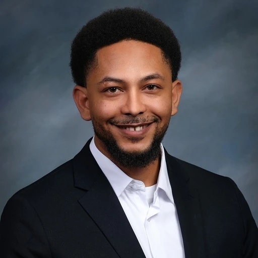

THE PAIN DOES NOT GO AWAY
They feel ongoing pain that does not go away.
If you were injured in a car accident, have medical bills, or lost income from missing work, you may have legal options to seek compensation regardless of your immigration status.
Free Case Evaluation ↗
Decades of determined advocacy in Connecticut courts
Real results and outstanding ratings
Clear and confidential guidance in Spanish and English
Awards and settlements for people injured in accidents
Approximately 85% of our clients have reported facing the following challenges after a car accident in Connecticut:
They feel ongoing pain that does not go away.
You have been unable to work for days, affecting your income and financial stability.
You are unsure whether to accept the insurance company’s offer and need a legal review.
You do not know your rights or what legal steps may be available.
Pursuing a claim after an accident can be complicated. Learn how legal representation can help protect your interests and support informed decisions when dealing with the insurance company:
You may not know what evidence is needed to support your claim.
We evaluate the circumstances of the accident and the legal options available for your case.
You may be transferred to call centers or administrative staff without direct access to attorneys.
Direct, personal access to Juan Girón and Shernette Noyes on the legal team.
Fear or misinformation about your immigration status may prevent you from seeking advice.
We help you understand your legal options, including concerns related to your immigration situation.
Some evidence can be lost if timely steps are not taken to preserve it.
We advise you about important evidence and possible legal steps for your case.
You may be unsure about the costs and terms of hiring legal representation.
No upfront attorney fees.
At Noyes & Associates, our team works to protect the interests of people injured in traffic accidents, falls, and other incidents, providing legal guidance and personalized attention throughout the process.

TRIAL LITIGATIONJuan Girón leads business development and the client experience at Noyes & Associates. He focuses on making the firm’s services accessible, coordinating assistance for new clients, and helping each person receive clear guidance on the next steps in their matter.
 SWEET MOTHER AWARD 2026 HONOREE
SWEET MOTHER AWARD 2026 HONOREERecognized with the 2026 Sweet Mother Award, attorney Shernette Noyes has more than two decades of compassionate, strategic legal experience. She advocates for vulnerable families, people injured in accidents, and the Hispanic community, working to provide dignified protection and financial relief. She offers bilingual representation in Spanish and English without intermediaries.
From car, truck, and motorcycle crashes to falls at businesses and workplaces, we help you understand your rights and explore legal options for pursuing compensation you may be entitled to.
Were you injured in a traffic accident? Our legal team evaluates your case and explains options for seeking compensation for medical expenses, lost wages, and other applicable damages.
Commercial truck and motorcycle accidents can cause serious injuries and complex claims. We help you understand your rights and the legal options that may be available based on the circumstances.
Were you injured in a fall at a supermarket, parking lot, or private property? We review the circumstances to determine which legal options may be available.
Financial recovery achieved through determined trial preparation and legal advocacy in Connecticut courts.
Claims involving commercial vehicle collisions, serious injuries, and potential financial losses.
Truck accident settlementCases involving workplace accidents, physical injuries, and claims for related damages.
Compensation for workplace injuriesClaims arising from high-speed multi-vehicle crashes that injured several people.
Traffic accident settlementCases involving dangerous surfaces, falls at businesses, and potential property-owner liability.
Premises liability settlementClaims involving rideshare accidents and injuries suffered by passengers.
Transportation accident compensationRead about the experiences of people who trusted Noyes & Associates for guidance and support throughout their legal matters.
“After my workplace accident, I was worried about medical bills and being unable to work. The team at Noyes & Associates explained my options and supported me through the process. Eventually, we reached a settlement that helped cover my losses and restore some peace of mind. I am very grateful for their support.”
 Sherlyn — Construction Accident Client
Sherlyn — Construction Accident Client“At first, I did not know whether to accept the insurance company’s offer. I decided to seek help from Noyes & Associates, and it was a good decision. They explained the process, reviewed my circumstances, and helped me reach a favorable settlement. I especially appreciated how they kept me informed and took my concerns seriously.”
 Mayra — Highway Accident Client
Mayra — Highway Accident Client“After my fall, I needed medical treatment and went through a very difficult time. I did not know whether I could pursue compensation. With help from Noyes & Associates, I was able to resolve my case and receive compensation for my injuries. They treated me with respect, answered my questions, and helped me move past a difficult chapter.”
 Villafranco — Personal Injury Client
Villafranco — Personal Injury Client“After my car accident, I was in a lot of pain and did not know how I would pay for treatment. The insurance company had made an offer, but I was unsure whether to accept it. The Noyes & Associates team reviewed my case, explained everything patiently, and handled the negotiations. In the end, we reached a settlement that helped with my medical expenses and the time I missed from work. I felt supported throughout the process.”

“I fell at a business and needed medical attention for my injuries. At first, I thought there was nothing I could do because I was unsure whether the business was responsible. I contacted Noyes & Associates, and from our first conversation, they explained my options. They helped me gather the necessary information, and after several months we resolved my case with compensation. I appreciate that they were always available to answer my questions.”

“I had never experienced anything like this. After a truck hit my vehicle, I had to miss work and begin treatment for my injuries. I was very worried because the bills kept coming. Noyes & Associates guided me through the process and handled communications with the insurance company. My case was eventually resolved through a settlement that allowed me to recover part of what I had lost. Thank you for treating me with respect and keeping me informed.”

Illustrative photos; additional testimonials await verification and authorization.
*Initials are used to protect client privacy. Past results do not guarantee similar outcomes under Connecticut law.
Talk with our team about your legal options after an accident in Connecticut.